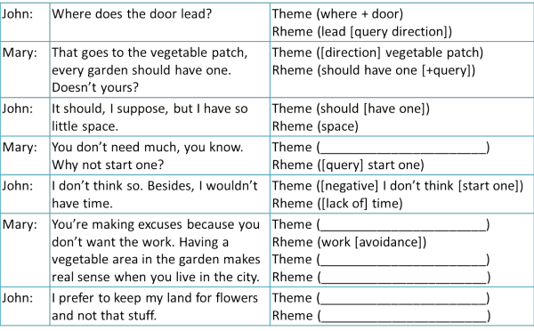
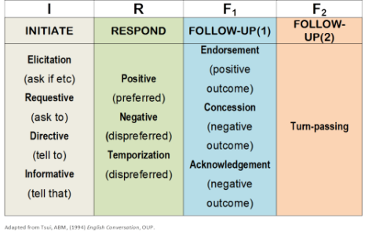
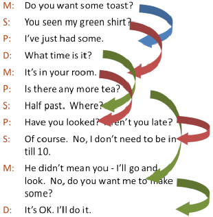

Spoken discourse

Please don't attempt this guide unless you happy that you know what is covered in the guide to cohesion.
 |
Referencing |
If you have covered the material in the guide to cohesion then you will be able to see and analyse the cohesive links in the following dialogue. There are examples of most of the types of cohesion which are covered in that guide.
 |
Task Read through the dialogue and identify an example of the following six: anaphoric demonstrative pronoun reference nominal ellipsis nominal substitution use of a general word clausal substitution cataphoric reference |
| anaphoric demonstrative pronoun reference | Mary says, That goes to the vegetable patch. Here the demonstrative pronoun, that, refers back to the door |
| nominal ellipsis | Mary says, You don't need much, leaving out the word space |
| nominal substitution | Mary says, Why not start one / every garden should have one, substituting one for vegetable patch (twice) |
| use of a general word | John says, and not that stuff, using stuff to refer generally to vegetables and vegetable areas |
| clausal substitution | John says, I don't think so, using so to substitute for the clause I will start one |
| cataphoric reference | In the first line, it refers forward to the garden |
If you found that task very difficult, stop now and do the guide to cohesion. What follows will be difficult if you don't.
 |
Theme-rhemeKeeping things on track |
The other thing to notice in this example, is the way the speakers maintain the discourse. Essentially, there is something called theme-rheme linkage occurring. Each speaker takes up the previous speaker's comment and develops it into a new theme. It works like this.
|
|
Complete the (_____________________) parts in your head and then click on the table for the answer to check. Don't worry if you don't have exactly the same answers, providing you have identified the correct themes and rhemes. |

Of course, as we shall see, interactions between native speakers of
any language are rarely so simple and orderly, especially if more than
two speakers are involved. Even in this little exchange, Mary
makes things more complicated by deploying two theme-rheme
couplets in her last turn (one of which John avoids, by the way).
However, we are not strangers to the idea of simplifying structures to
help our students understand and learn and there is no real difference
between simplifying, say, conditional structures to make things easier
and simplifying the targets of skills teaching for the same reason.
 |
Rules for speaking |
One of the reasons why learners often find speaking the hardest skill to master is because it seems random and unpredictable with no rules to guide the user. That's not entirely true as the example above shows but before we go on to look at what these rules might be, can you think of some more problems that learners have when they try to speak in English?
Click here when you have had time to think a little.
- Time pressures
- speaking happens in real time usually so there is no opportunity to listen to what one has said, redraft it and try again
- Preparation
- unlike writing, we do not usually have the luxury of thinking time to prepare what we are going to say
- Familiarity with the topic
- again, we don't usually have time to prepare what to talk about with someone and sometimes have to cope with suddenly holding a conversation on a topic which is not very familiar to us
How do native speakers deal with these pressures?
Think again, click again.
Essentially we do two things:
- We facilitate
- to make life easier for ourselves and
- We compensate
- for not having time and preparation to make life easier for our listeners
Here's how it works:
| Using parataxis and hypotaxis | Parataxis refers to the fact that in speaking we often
add things with very unsophisticated conjunctions
such as and ... and ... and
or then .... then ... and then...
etc. Technically the term applies to the non-use of
conjunctions, too, as in, e.g.: I ate eggs, bacon, cheese, toast and butter. The term comes from the Greek meaning to arrange side by side. Parataxis is a simple system which requires less processing time to produce or understand. Hypotaxis refers to subordinating conjunctions and conjuncts such as because, so, consequently, accordingly and so on which are less common in informal spoken language. The term comes from the Greek meaning to arrange below. The use of hypotaxis, it is assumed, requires more thought and sometimes preparation time and is indicative of prepared speech in formal settings. |
| Ellipsis | Sharing background knowledge. If something is known to both the speaker and the listener then there's no need to describe it or, in many cases, mention it |
| Example: that new roundabout certainly makes getting into the hospital car park hard. | |
| Formulaic expressions | Native speakers have a huge range of these at their disposal which don't have to be constructed (or decoded) because they are memorised as prefabricated chunks of language |
| Examples: You know what I mean, You'll never guess what, And then what?, Say again, What can I say? etc. | |
| Simplification | Speakers use simpler lexis and grammar than writers |
| Example: What might be written as X and Y would like to invite you to their 20th Wedding Anniversary party to be held at ... on ... might be spoken as Please try to come to the party [ellipsis of shared knowledge]. It's at ... on Saturday. | |
| Fillers and false starts | It's common (that is to say, frequent, not uneducated or slovenly) to use err, erm, um, and to backtrack and rephrase an utterance. |
| Example: I saw John in town the ... Well, he saw me first actually and, erm, well, we just got talking about things and, y'know, ... | |
Now click here for a short test in this area.
 |
How is interaction structured? |
| a breakfast conversation |
Can you follow this?
| M: | Do you want some toast? |
| S: | You seen my green shirt? |
| P: | I’ve just had some. |
| D: | What time is it? |
| M: | It’s in your room. |
| P: | Is there any more tea? |
| S: | Half past. Where? |
| P: | Have you looked? Aren’t you late? |
| S: | Of course. No, I don’t need to be in till 10. |
| M: | He didn’t mean you - I’ll go and look. No, do you want me to make some? |
| D: | It’s OK. I’ll do it. |
Given a little time, most of can unravel who is talking and whom they
are responding to but it isn't easy. We can, with the text in
front of us, also identify the theme-rheme structures in the
interactions.
Just as we don't just give learners a text and a grammar book and tell
them to figure things out for themselves, we need to break down the
skill of speaking into manageable units. Theme and rheme is one
such structure and here's another.
 |
Initiate-Respond-Follow up |
Look at this simple exchange:
Have you ever been to France?
Yes, I have.
When did you go?
Last year.
That may be a good way to practise the present perfect-past simple
contrast but it doesn't sound very natural, does it?
Compare it with this:
Have you ever been to France?
Yes, I have. Why do you ask?
I'm thinking of taking John there for his
fiftieth. Can you recommend any particular places for a history
buff?
Well, I went for the skiing and the wine but
I'll ask my brother. He's lived there for over 20
years and will know something, I'm sure.
Thanks.
No problem.
What's the difference you notice? Click here when you have some idea.
Essentially, the first exchange follows a simple pattern:
One
person Initiates, the other Responds, like a game of ping-pong.
In the second dialogue, the thing to notice is that one person Initiates, the other Responds but then also Initiates in the same turn.
The other thing to notice is that at the end of the conversation, both speakers signal that they are giving up their turn. That's the Follow-up.
Learners whose only speaking practice has been the oral manipulation of grammar structures may well be unaware that to keep a conversation alive they have to serve as well as return.
Here's a table of the possible ways of conducting this simple conversation.

This looks more complicated than it is but it’s actually a very
simple grammar of speaking. Just like grammar, we can break down the
data and teach it bit by bit.
| Have you ever been to France? | This is an Initiation. In the table above we
can identify that it's an Elicitation (asking if). We can
also express it as a Requestive: Can you tell me about ... or a Directive: Tell me ... or an Informative: You've been to France. |
| Yes, I have. Why do you ask? | Here we have a preferred
Response and a new Initiation (also an Elicitation). A
dispreferred Response would be something like: Sorry, no. |
| I'm thinking of taking John there for his fiftieth. Can you recommend any particular places for a history buff? | Again a Response followed by an Initiation (Informative). |
| Well, I went for the skiing and the wine but I'll ask my brother. He's lived there for over 20 years and will know something, I'm sure. | Here the Response is dispreferred: the speaker is temporising but offers a new Initiation (Informative). |
| Thanks. | A Follow-up (preferred). |
| No problem. | Turn passing. With falling intonation, this usually signals that the speaker has finished but may be open to a new Initiation. |
This can be taught, of course, just as you can teach any other skill or system by getting learners (with your help) to unpack the speakers' acts and what they are doing and then try to construct similar conversations about something they want to say.
With all this in mind, it's now possible, by the way, to break down the breakfast conversation and see where all the initiations and responses actually go. Like this:

Finally, we must consider the issue of turn-taking and how that is accomplished in Anglophone cultures. For that, you need to consult the guide to turn-taking linked in the list of related guides at the end.
Now click here for a short test in this area.
| Related guides | |
| cohesion | the guide to referencing in particular |
| speaking | for an overview of the area in general terms |
| speaking in EAP | for a guide to the kinds of speaking skills which are required in an EAP context |
| theme and rheme | for a guide to this important area of coherence and cohesion |
| deixis | the guide to here, there, now, then, you, me and how we can move the centre |
| turn-taking | a guide to how this is accomplished in English |
| backchannelling | a guide to a related area often seen as closely allied to turn-taking |
| sociolinguistics | for consideration of the connections between society and language including variations in social class, region, nationality, sex etc. |
| adjacency pairs | for a guide to some common ways of teaching speaking |
| semantics | for a guide to how meaning is made |
References:
Halliday MA K & Hasan, R, 1976, Cohesion in English,
Harlow: Longman
Tsui, A, 1994, English Conversation, Oxford: Oxford University Press